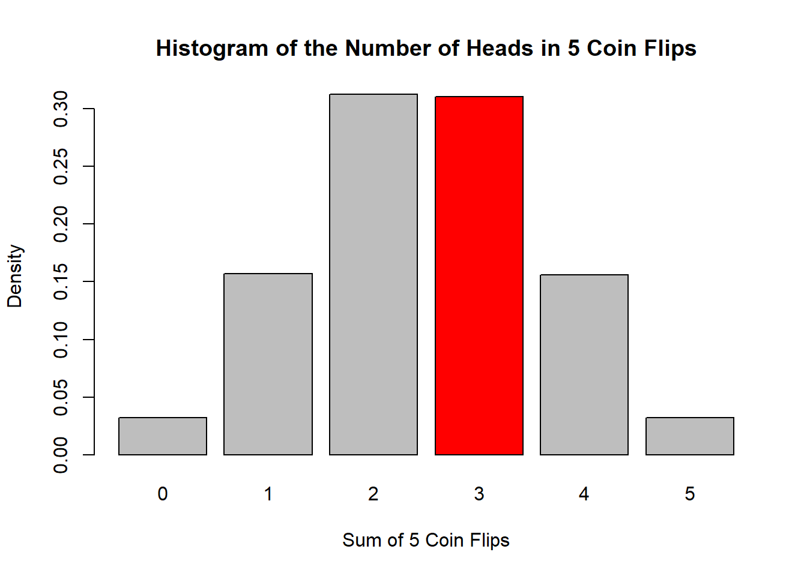
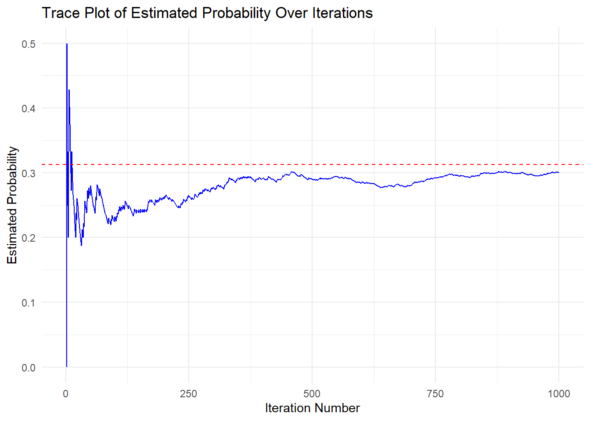
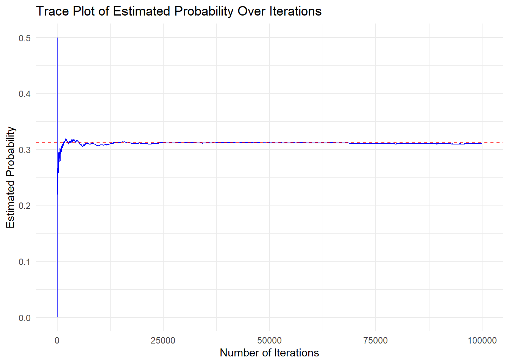
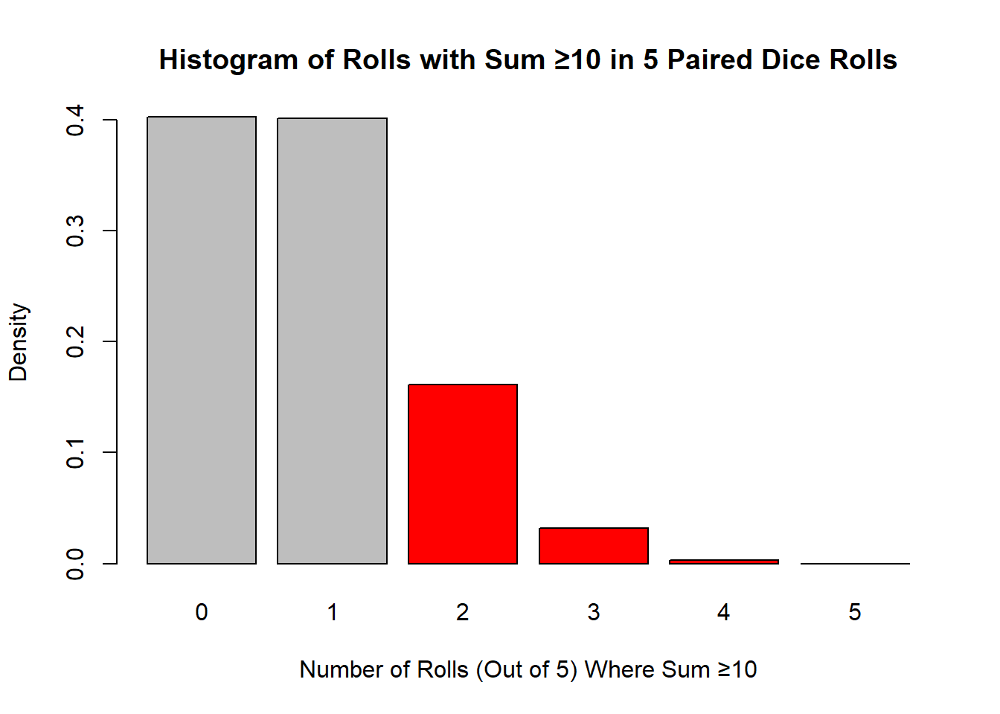
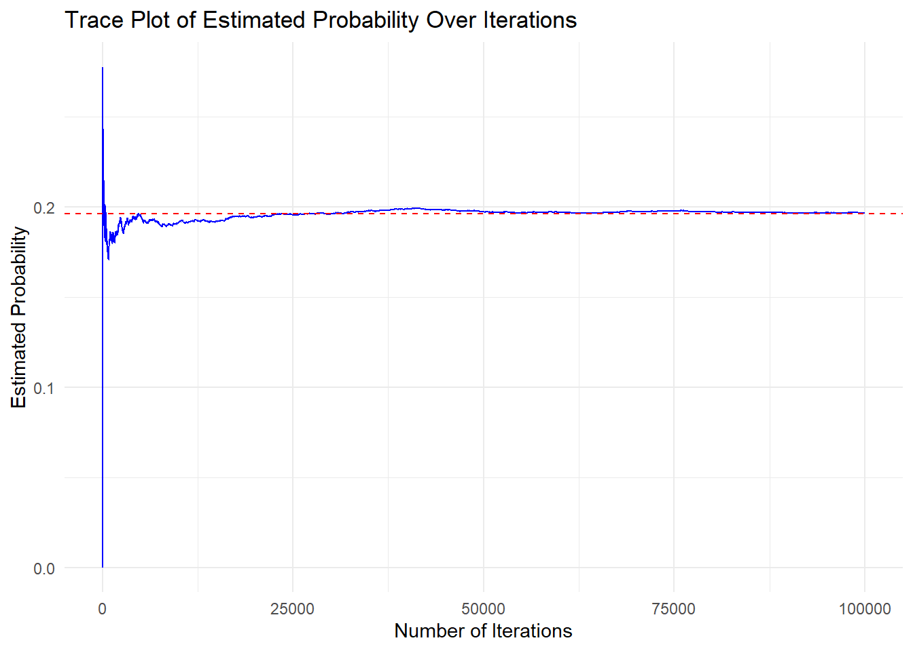

Monte Carlo Simulation
This tutorial introduces Monte Carlo simulations, a method for exploring possible outcomes in uncertain scenarios through repeated random sampling.
What is Simulation
Simulations are a type of experiment that generates artificial data using known probability distributions or models (Morris, White, and Crowther 2019; White et al. 2024). They allow researchers to test the performance of statistical methods in a controlled setting, which is especially useful when comparing new or alternative approaches. Simulations are particularly valuable when standard statistical methods may not be appropriate due to issues with data completeness, quality, or incorrect assumptions (Morris, White, and Crowther 2019; White et al. 2024).
For example, many statistical methods, such as Ordinary Least Squares regression, rely on specific assumptions. When these assumptions are not met, the results may be biased, inconsistent, or inefficient, making them less reliable for understanding relationships in the data (Mooney 2025). In such cases, simulation studies provide a way to explore different scenarios under controlled conditions. This is especially helpful when practical constraints, such as time, cost, or ethical considerations, make traditional study designs difficult or impossible (Lohmann et al. 2022). Simulations also allow researchers to examine how relationships behave under varying conditions, offering insights into patterns and outcomes that may not be directly observable in real-world data.
What is Monte Carlo Simulation
Monte Carlo simulation is a method used to estimate the range of possible values a statistic can take by repeatedly generating random samples (Morris, White, and Crowther 2019; White et al. 2024). These random samples help approximate the statistic’s sampling distribution (Morris, White, and Crowther 2019; White et al. 2024). The sampling distribution represents the range of possible values a statistic can take if we repeatedly sampled from the same population (Rossi 2022). For example, If we flip a fair coin 100 times, record the proportion of heads, and repeat this experiment many times, then the distribution of those proportion values is called the sampling distribution.
Since collecting multiple real-world samples is often impractical, Monte Carlo simulation provides an alternative by analyzing randomly generated samples that reflect real data patterns (Mooney 2025). This approach is especially useful when gathering real data is difficult or costly. By creating artificial data that behaves like real-world data, researchers can study statistical patterns without needing multiple real samples (Mooney 2025).
The basic idea behind Monte Carlo simulation is straightforward. To understand how a statistic behaves in actual data, researchers create a simulated version that mimics key characteristics of the real-world scenario. By running multiple experiments on this simulated data, they can observe how a statistical method performs across different conditions, leading to more informed conclusions (Mooney 2025).
Example 1
When flipping a fair coin, there is a 50% chance (0.5 probability) of getting heads. This type of event is called a Bernoulli trial, where there are only two possible outcomes: heads or tails.
If we want to find the probability of getting exactly 3 heads in 5 coin flips, we can use the binomial distribution. This mathematical formula calculates the probability of a certain number of successes (heads) in a fixed number of trials (flips). Using the binomial formula, the probability of getting exactly 3 heads in 5 flips is 0.3125, or about 31%.
\[ P(X = 3) = \binom{5}{3}0.5^{3}(1-0.5)^{5-3}= 0.3125 \] Instead of using a formula, we can also estimate this probability using Monte Carlo simulation. This approach involves simulating 5 coin flips many times and counting how often exactly 3 of them land on heads. By running this experiment repeatedly, we can approximate the probability based on the results from the simulations.
# Simulate flipping a fair coin 5 times and count how often the sum of heads equals 3
set.seed(123) # Set seed for reproducibility
# Establish variables prior to simulation
count <- 0
iter <- 100000 # Number of iterations for the simulation
save.sum <- numeric(iter) # Numeric vector to store flip results
results <- numeric(iter) # Numeric vector to store cumulative parameter estimate
# Loop through a specified number of iterations
for(n in 1:iter) {
# Generate a sample of 5 values (either 0 or 1), then sum them
save.sum[n] <- sum(sample(c(0,1), 5, replace = TRUE))
# Check if the sum of the sampled values equals 3
if(save.sum[n] == 3){
count = count + 1 # Increment the count if condition is met
}
# Compute the proportion of times the sum was 3 up to the current iteration
results[n] <- count / n
}
print(count/iter)
#> [1] 0.31034Using Monte Carlo simulation, we estimate the probability of getting exactly 3 heads in 5 coin flips. The simulation gives a probability of 0.31034, which is very close to the true probability of 0.3125.
We can use a few plots to understand these results more intuitively. First, let’s create a histogram of the sums (the number of heads) obtained from the random samples:
# Plot a histogram of the number of heads in 5 coin flips
hist_data <- hist(save.sum,
breaks = seq(-0.5, 5.5, by = 1),
plot = FALSE)
# Compute density values manually
densities <- hist_data$counts / sum(hist_data$counts) / diff(hist_data$breaks)
# Define custom bin colors (color bins 2,3,4,5 red, others gray)
bin_colors <- ifelse(hist_data$mids == 3, "red", "gray")
# Use barplot to display density histogram with custom colors
barplot(densities, names.arg = hist_data$mids, col = bin_colors,
main = "Histogram of the Number of Heads in 5 Coin Flips",
xlab = "Sum of 5 Coin Flips", ylab = "Density", border = "black")
From this histogram, we observe that the frequency of getting exactly 3 heads hovers around 30%, consistent with our simulation’s estimate.
To further explore how our simulation arrives at the probability of getting 3 heads, we can look at a trace plot. A trace plot shows how a parameter (in this case, our running estimate of the probability of getting 3 heads) evolves over many iterations of the algorithm.
Below is a trace plot of the first 1000 iterations:
# Trace plot for first 1000 iterations
# Convert results into a data frame for plotting
trace_data <- data.frame(
Iteration = 1:iter,
ProbabilityEstimate = results
)
# Create a line plot using ggplot2
ggplot(trace_data[1:1000,], aes(x = Iteration, y = ProbabilityEstimate)) +
# Add a blue line to represent probability estimates over iterations
geom_line(color = "blue") +
# Add a horizontal dashed red line at y = 0.3125,
# the true probability of filling 3 heads in 5 flips
geom_hline(yintercept = 0.3125, linetype = "dashed", color = "red") +
labs(
title = "Trace Plot of Estimated Probability Over Iterations", # Plot Title
x = "Iteration Number", # x-axis label for the x-axis
y = "Estimated Probability" # y-axis label
) +
theme_minimal() #ggplot2 minimal theme for clean appearance
In the first 100–200 iterations, there is a considerable amount of fluctuation in our estimate. As the number of iterations increases, it settles closer to the red dashed line at 0.3125, which is the true theoretical probability for flipping exactly 3 heads out of 5 coin tosses.
We can also construct a trace plot for all iterations to confirm that the estimate remains stable as more samples are drawn:
# Plotting the running estimate as iterations increase
ggplot(trace_data, aes(x = Iteration, y = ProbabilityEstimate)) +
geom_line(color = "blue") +
geom_hline(yintercept = 0.3125, linetype = "dashed", color = "red") +
labs(
title = "Trace Plot of Estimated Probability Over Iterations",
x = "Number of Iterations",
y = "Estimated Probability"
) +
theme_minimal()
As we continue running the simulation, the proportion of sums of coin flips equal to 3 settles around the theoretical value (0.3125), demonstrating how Monte Carlo methods approximate true probabilities over many iterations.
You can experiment by changing the total number of coin flips or the target number of heads to see how the Monte Carlo simulation behaves under different conditions. This can help illustrate how probabilities shift for various binomial scenarios.
Example 2
Suppose we roll two dice together and want to determine how often the total sum is 10 or greater in 5 rolls.
Each die has six sides, and the possible sums range from 2 (1+1) to 12 (6+6). To roll 10 or more, we need one of the following combinations:
10: (4,6), (5,5), (6,4)
11: (5,6), (6,5)
12: (6,6)
Out of 36 possible outcomes, there are 6 ways to roll 10 or greater, giving a probability of 1/6.
To find the probability of rolling a sum of 10 or greater at least 2 times in 5 rolls, we use the binomial distribution:
\[ \begin{aligned} P(X = 0) & = \binom{5}{0} (1/6)^{0} (1 - 1/6)^{5} = 0.4018776 \\ P(X = 1) & = \binom{5}{1} (1/6)^{1} (1 - 1/6)^{5-1} = (5/6)^5 = 0.4018776 \\[20pt] P(X \geq 2) & = 1 - (P(X = 0) + P(X = 1)) = 0.1962449 \end{aligned} \]
We can also estimate this probability using Monte Carlo simulation. This involves simulating five rolls of two dice and counting how often the total is 10 or greater at least twice. By repeating this experiment many times, we can approximate the probability based on the simulation results.
set.seed(123)
count <- 0 # Initialize count variable
iter <- 100000 # Number of iterations for the simulation
count_10_or_greater <- numeric(iter) # Numeric vector to store the number of dice rolls that are 10 or greater
results2 <- numeric(iter) # Numeric vector to store cumulative parameter estimate
# Loop through the simulation
for(n in 1:iter){
# Simulate rolling two six-sided dice 5 times, summing each pair's result
dice_rolls <- replicate(5, sum(sample(1:6, 2, replace = TRUE)))
# Count how many of the 5 rolls resulted in a sum of 10 or greater
count_10_or_greater[n] <- sum(dice_rolls >= 10)
# Check if at least 2 out of the 5 rolls resulted in a sum ≥ 10
if(count_10_or_greater[n] >= 2){
count <- count + 1 # Increment the count if condition is met
}
# Compute the cumulative proportion of times the 10 or greater was rolled at least twice
results2[n] <- count / n
}
print(count/iter)
#> [1] 0.19676Using Monte Carlo simulation, we estimate the probability of rolling a sum of 10 or greater in 5 paired dice rolls. The simulation gives an estimated probability of 0.19676, which closely matches the true probability of 0.19624.
As we did in the previous example, we can again plot a histogram to visualize the number of rolls (out of 5) where the sum was at least 10. Since we are particularly interested in cases where this happens at least twice, we will highlight the corresponding bins in red:
# Create histogram object without plotting, save it under hist_data
hist_data <- hist(count_10_or_greater,
breaks = seq(-0.5, 5.5, by = 1),
plot = FALSE)
# Compute density values manually
densities <- hist_data$counts / sum(hist_data$counts) / diff(hist_data$breaks)
# Define custom bin colors (color bins 2,3,4,5 red, others gray)
bin_colors <- ifelse(hist_data$mids %in% c(2,3,4,5), "red", "gray")
# Use barplot to display density histogram with custom colors
barplot(densities, names.arg = hist_data$mids, col = bin_colors,
main = "Histogram of Rolls with Sum ≥10 in 5 Paired Dice Rolls",
xlab = "Number of Rolls (Out of 5) Where Sum ≥10", ylab = "Density", border = "black")
Observing the red bins, we see that their total proportion is approximately 20% of the simulations, aligning with our probability estimate.
Just as before, we can also plot a trace plot to observe how our probability estimate stabilizes over iterations:
# Convert results into a data frame for plotting
trace_data2 <- data.frame(
Iteration = 1:iter,
ProbabilityEstimate = results2
)
# Plotting the running estimate as iterations increase
ggplot(trace_data2, aes(x = Iteration, y = ProbabilityEstimate)) +
geom_line(color = "blue") +
geom_hline(yintercept = 0.1962449, linetype = "dashed", color = "red") +
labs(
title = "Trace Plot of Estimated Probability Over Iterations",
x = "Number of Iterations",
y = "Estimated Probability"
) +
theme_minimal()
As in the last example, the first 100–200 iterations show significant fluctuation in the estimated probability. However, as the number of iterations increases, the estimate stabilizes around 0.19624, which is the true theoretical probability of rolling a sum of 10 or more at least twice in 5 rolls.